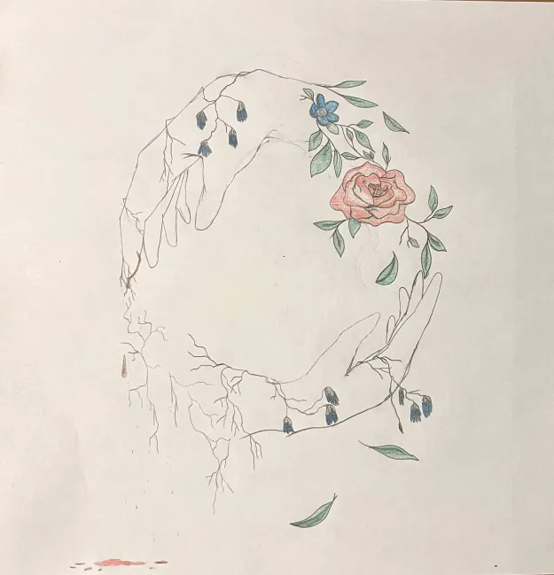
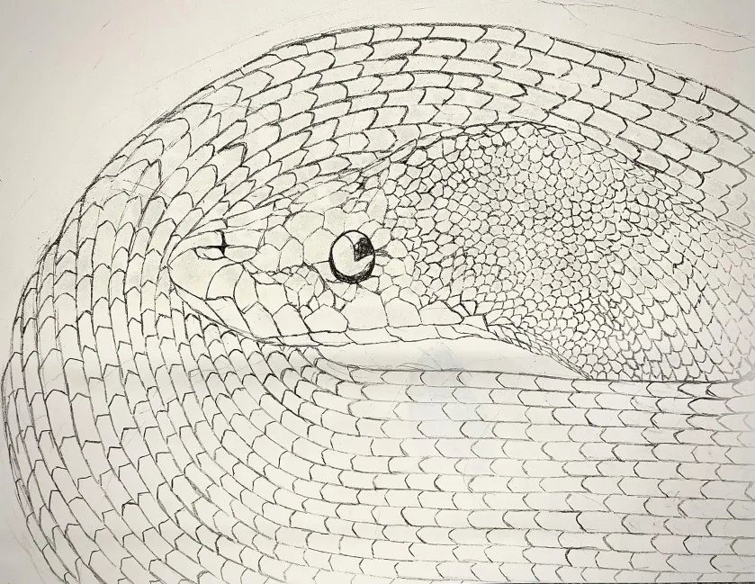
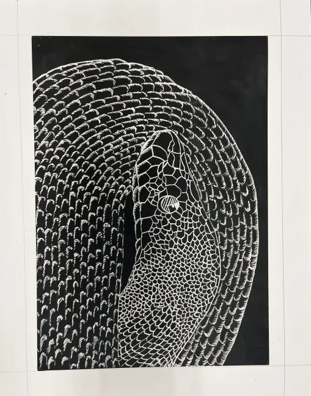
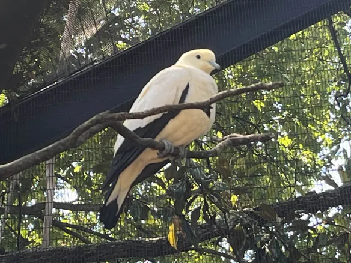
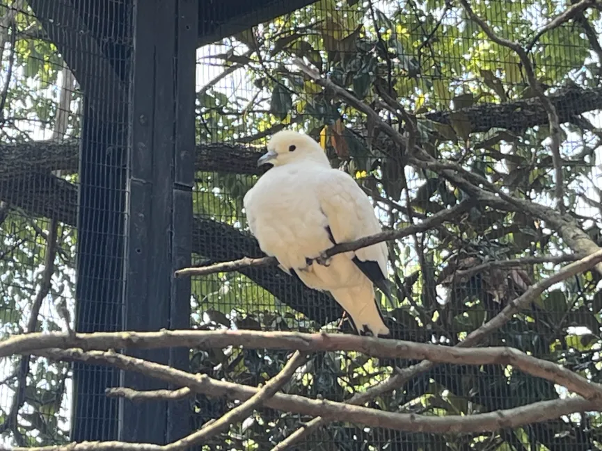
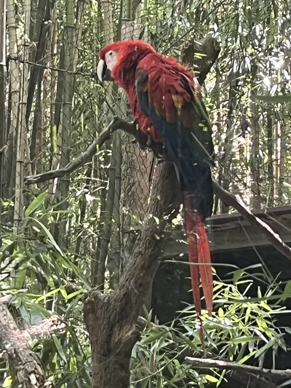
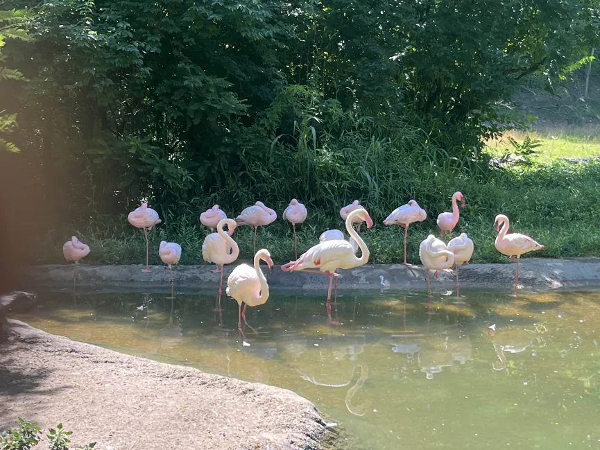
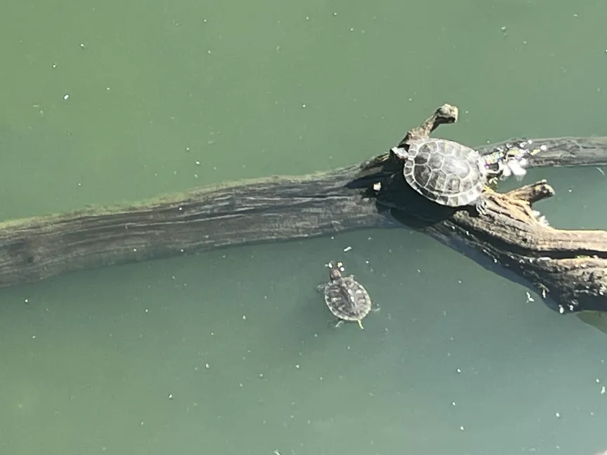

Quilt Design, Deans Choice
Hello! My name is Grace Mazuk and I'm double majoring in Graphic Design and Computer Science.
The website is a collection of work that I've created over the years.
Hello! My name is Grace Mazuk and I'm double majoring in Graphic Design and Computer Science.
The website is a collection of work that I've created over the years.
Quilt Design, Deans Choice
Research and Development Comic

The Cycle, Hung in Gallery
Other Awards
Linkedin Profile
The Cycle


Snake
the book covers


Pied imperial pigeons. Taken at the Cincinnati zoo.

Scarlet macaw. Taken at the Cincinnati zoo.

Flamingos. Taken at the Cincinnati zoo.

Two Turtles. Taken at the Cincinnati zoo.